Bridge House na Polanie on Strikingly
-
Bridge House to żywe laboratorium Następnej Kultury.
-
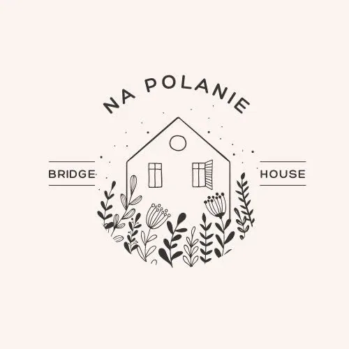
Jesteśmy Nawigatorami Żeglugi po kulturowych krawędziach.
Tworzymy tymczasową, wspólnotową przestrzeń głębokiego doświadczania i czucia, gdzie odkrywamy jak to jest żyć w autentycznym połączeniu ze sobą, dziećmi i naturą.
W Bridge House na Polanie działamy jako drużyna aby tworzyć nową regeneratywną kulturę opartą o kontekst radykalnej odpowiedzialności.
-
Odpowiedzialność. Połączenie. Autentyczność.
Jak dorosłe kobiety i mężczyźni biorący za siebie pełną odpowiedzialność mogą tworzyć coś zupełnie nowego poza współczesną kulturą?
Jak to jest żyć w autentycznych relacjach tak aby mieć otwarte serce i pozostawać przy sobie?
Jak tworzyć wspólnie i co jest możliwe kiedy działa się razem, a nie w pojedynkę?
Jak trzymać przestrzeń dla dzieci aby było to wspierające dla dzieci i dorosłych?
Jakie jest możliwe rodzicielstwo, praca i celebrowanie w Następnej Kulturze?
Jak budować relacje z Ziemią, Naturą,Nieznanym i jakie są nasze kolejne kroki na ścieżce wewnętrznego i zewnętrznego uzdrowienia?
Wiemy już, że Archiarchii i innych Następnych Kultur nie tworzy się w pojedynkę, posługując się starymi narzędziami i przekonaniami. Wiemy też, że coś innego jest możliwe i by to stworzyć potrzebujemy wziąć za to odpowiedzialność. Wspólnie chcemy odkrywać i doceniać wartość płynącą z bycia we wspólnym odkrywaniu i twórczej współpracy, z bycia jedną drużyną, zespołem czy nawet Wioską!
-
Drużyna Bridge House
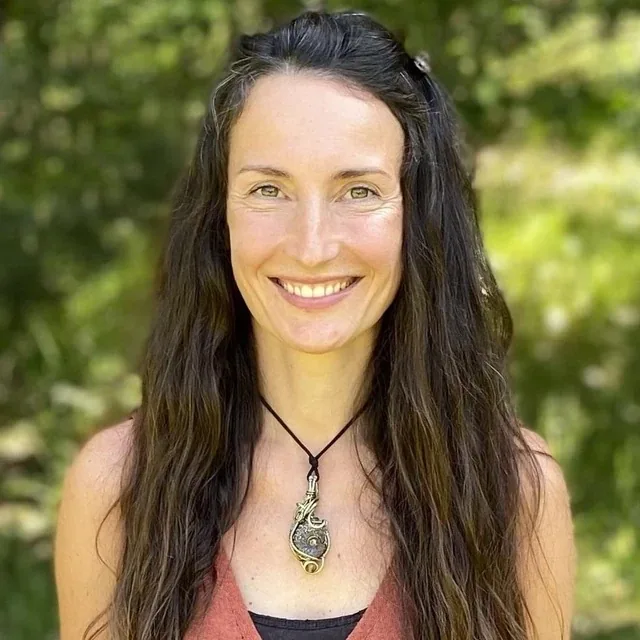
Ewa Szczepaniak
Jestem Edgeworkerką oddaną Ewolucji i Żywotności.
Uwielbiam doświadczać, kiedy następuje transformacja i pojawiają się nowe możliwości. Dlatego pasjonuje mnie praca ze świadomym Strachem i pozostawanie na krawędzi własnej ewolucji.Trzymam przestrzeń dla Klubów Strachu, aby obudzić Stwórcę i Maga w innych, aby mogli wykorzystać siłę Żywotności i Kreatywności do manifestacji Nowej Kultury.
Jestem zaangażowana w odkrywanie kobiecej ścieżki do Archiarchii, trzymając przestrzeń dla radykalnych relacji i tworząc most dla mężczyzn na ich kolejnym etapie ewolucji.
Od kilkunastu lat transformuje swoje stare paradygmaty dotyczące relacji, macierzyństwa, trzymania przestrzeni dla dzieci, kooperacji i potencjału nas, jako istot ludzkich. Mieszkam w Nowej Zelandii, gdzie razem z grupą innych Edgeworkerów tworzę projekt ONTREE - Archairchy Invention Center, gdzie w kontekście radykalnej odpowiedzialności, odkrywamy czym jest Nowa Kultura.
https://www.ewaszczepaniak.orghttps://ontreecentre.mystrikingly.com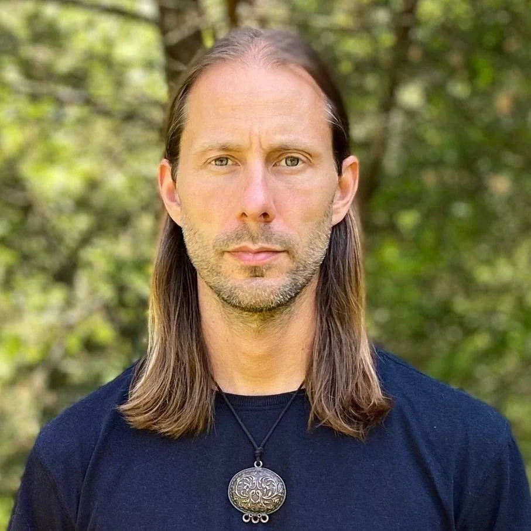
Wojciech Zawadzki
Pasjonuje mnie odkrywanie magii życia i jego wielowymiarowe doświadczanie. Podążam za impulsami serca, często podejmując nieracjonalne decyzje spoza obszaru moich kompetencji. Nieracjonalne bo umysł nie rozumie jeszcze tego, gdzie woła serce. A serce woła mnie do życia, do nieodkrytego, do kreacji. Serce podąża za pragnieniem do bycia pełnej tym, czym jestem. To jak robienie kroków z pasją, zaangażowaniem i ciekawością dziecka przy jednoczesnym braniu odpowiedzialności jako dorosły za to co kreuję świadomie i nieświadomie. To przygoda, w której kierunek, informacje i energia pochodzi z tego co czuję.
Badam i odkrywam nową kulturę mężczyzn, bazującą na wspólnym wzmacnianiu się do odważnego i wrażliwego dzielenia się talentami i zasobami ze światem. Jestem ojcem 2 rocznej Mii i 4 letniego Leo oraz partnerem Ewy, z którymi eksploruję życie w chwili obecnej, podążając za autentycznymi impulsami, bez założeń i reguł.Tworzę przestrzenie klarowności, miłości, kreacji i uzdrawiania w pracy indywidualnej i grupowej. Specjalizuję się w pracy indywidualnej coachingu możliwości, procesach inicjacyjnych w dorosłość, pracy z czuciem, warsztatach grupowych z gniewu i strachu oraz coachingu dla par.
Wspólnie z pasjonatami odkrywania nowej kultury, pochodzącymi z różnych części świata, współtworzę wioskę Ontree Center w Nowej Zelandii, która jest centrum inwencji nowej kultury i inicjacji do dorosłości, co oznacza, że każdy bierze pełną odpowiedzialność za to co kreuje świadomie i nieświadomie w świecie.
https://www.wojciechzawadzki.org/https://ontreecentre.mystrikingly.com/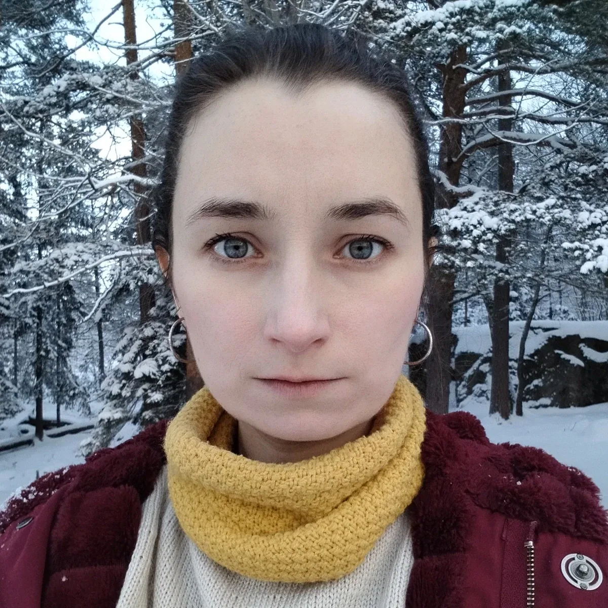
Justyna Płatek
Tworzę przestrzenie świadomego czucia dla kobiet, które wychodzą z ram współczesnej kultury aby budować połączenie i bliskość ze sobą i innymi. Powołuje je w połączeniu z Nieznanym - z którego czerpię aby usłyszeć i uhonorować nieskończoną pieśń cyklu Ziemi i Nieba. Czytam niewidzialne połączenia - znaki, symbole, sny, badam Archetypy.
Trzymam przestrzeń Rage Club, kobiecych księżycowych kręgów oraz indywidualnych procesów emocjonalnego uzdrawiania.
Otwieram drzwi do nowych możliwości rodzicielstwa. Fascynuje mnie odkrywanie tego co jest we mnie żywe gdy jestem z dziećmi, w jaki sposób mogę odpowiedzialnie i z poziomu Dorosłego trzymać przestrzeń dla ich naturalnej wrażliwości i ciekawości. Obserwuję w jaki sposób Natura jest naturalną przestrzenią wychowania.
Jestem czarodziejką słowa. Piszę leczące opowieści dla dzieci i dorosłych, w których pokazuję jak transformować stare mapy czucia i przekonań.
Dzielę się złotem swoich macierzyńskich odkryć tu: https://www.facebook.com/duchowemacierzynstwo
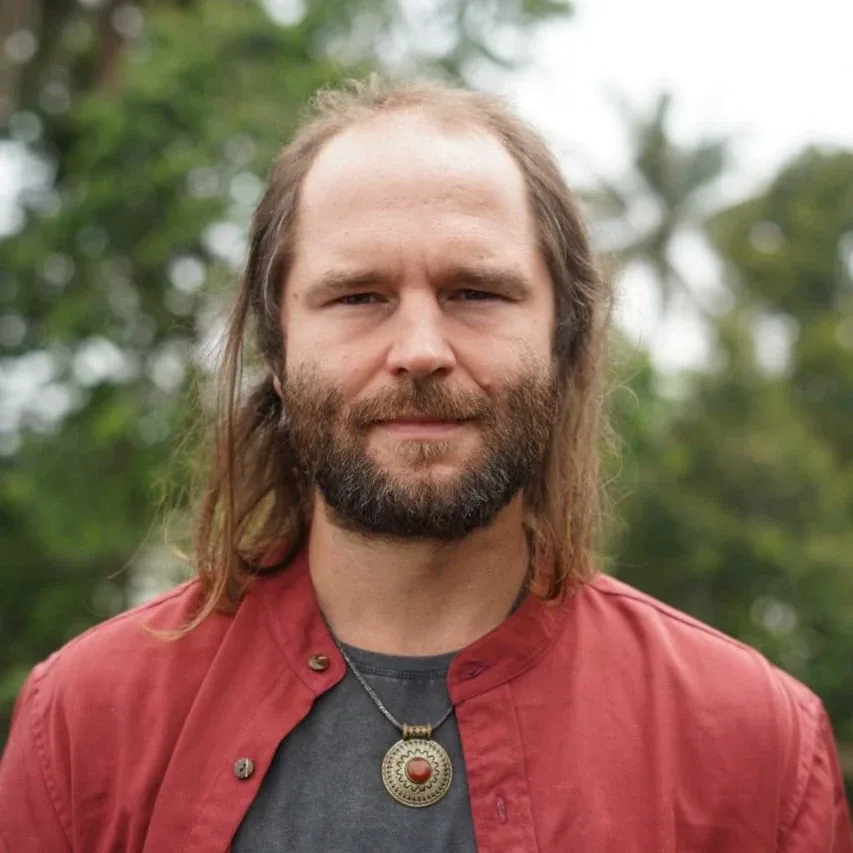
Karol Nowakowski
Odkrywam na nowo, co to znaczy kreować swoje życie. To gdzie jestem i co tworzę - co tak naprawdę tworzę. Poza moimi wyobrażeniami o tym co „chciałbym stworzyć ale nie mogę bo…”. Zauważam, że w kolejnych warstwach mojej codzienności, tego co uważałem za zwyczajne, czemu się nie przyglądałem, co oczywiste że JEST, znaleźć mogę dużo automatyzmów.
Mechanizmów zaakceptowanych tak dawno, że teraz nazywam je „rzeczywistością”. Czasami zobaczenie tego oraz konsekwencji jakie ma to w moim życiu łamie moje serce. To moja ścieżka dzisiaj i jestem za to wdzięczny. Do Bridge House chcę wnieść swoje odkrycia na tej drodze, swoją klarowność i zaangażowanie w ciągłe odkrywanie odpowiedzi tego kim jestem, co jest dla mnie możliwe, jak dzielić się tym z innymi i jak współtworzyć przestrzeń radykalnej odpowiedzialności, wolności i relacyjności.
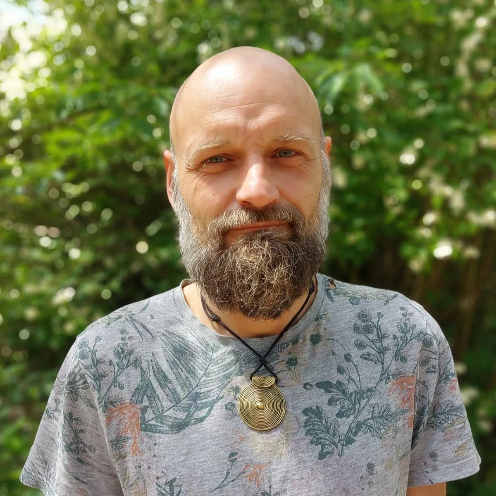
Karol Sprawka
Jestem Piratem serfującym po krawędziach kulturowych, towarzyszem podróży poza znane horyzonty.
Jestem badaczem starych i nowych kultur, oraz mostem pomiędzy nimi. Jestem strażnikiem przestrzeni, w której przemiana i uzdrowienie stają się możliwe.
Uwielbiam doświadczać w sobie jak towarzyszyć innym w odkrywaniu niezbadanych źródeł potencjału i sprawczości.
W swoim życiu nawiguje do mądrości prostoty i docenienia tego co już jest, do zakorzeniania się w jeszcze głębszej obecności.
Godność i szacunek wobec siebie i wlasnego życia jest dla mnie podstawą do jakiejkolwiek pracy transformacyjnej. Jest to też według mnie początek Dorosłości.
Uwielbiam schodzić do esencji tego jak blisko mamy do siebie w swej podroży stawania się dojrzałym człowiekiem na Ziemi.
Od niemal 5 lat jestem związany z Possibility Management i ogólnie pojętym edgeworkingiem. Obecnie organizuje Lato Archiarchii w Polsce czyli miesiąc treningów, spotkań i twórczej współpracy, i tym samym tkania wioski Następnej Kultury.
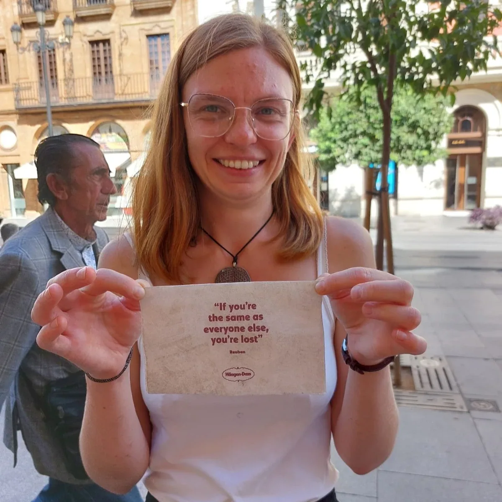
Ewa Wichmann
Od zawsze wiedziałam, że istnieje coś innego niż to co przedstawiają mi rodzice czy inni dorośli. Zaczynając od definicji miłości, przez relacje z ludźmi i roślinami, po sposób życia na Ziemi kończąc. Jestem w ciągłym odkrywaniu nowego, poszukiwaniu czego jeszcze nie wiem.
Uwielbiam tworzyć i pokazywać nowe możliwości, znajdować piękno w brzydocie i lekkość w tym co z pozoru trudno przeżyć. W swojej esencji jestem radością życia. Nienawidzę gdy ktoś twierdzi, że coś jest niemożliwe oraz tłocznych miast i używania perfum.
Z wykształcenia jestem inżynierką środowiska, ale mój prawdziwy zawód to trzymanie przestrzeni dla transformacji i ewolucji.
Od kilku lat jestem aktywnie zaangażowana w społeczność Possibility Management, zamieszkuję i współtworzę kolejne Bridge-House'y, współtworzę Newsletter Possibility Management Polska i współorganizuję Lato Archiarchii w Polsce - miesiąc czterech treningów z Clintonem Callahanem i Anne-Chloe Destremau. Trzymam przestrzeń praktyki 3-3-3, oraz od czasu do czasu Possibility Team oraz RageClub.
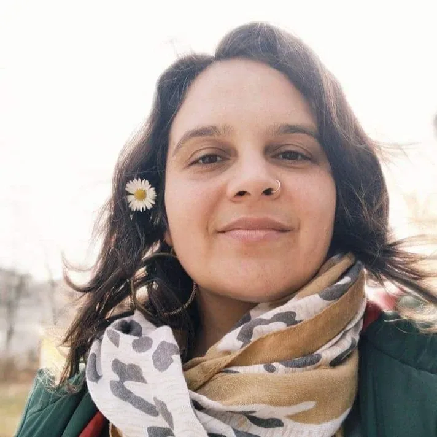
Beata Piskadło
Jestem przewodniczką, która przeprowadza kobiety przez zmianę w kierunku własnej mocy i poczucia pełni. Z odwagą i miłością. Od ponad 7 lat facylituję kobiece kręgi, autorskie warsztaty dla kobiet z gniewu, projekty dla młodych matek w procesie transformacji, przestrzenie pozytywnej seksualności i świadomości seksualnej. Współorganizuję przestrzenie rozwoju i bliskości. Jestem członkinią nieformalnych grup rozwojowych i wspólnotowych.
Fascynuje mnie temat kobiecych inicjacji, rytuałów przejścia, wspólnot intencjonalnych i rodzicielstwa poza współczesną kulturą zachodnią.
Razem z rodziną odbyłam kilkumiesięczną podróż inicjacyjną na Wyspy Tonga, gdzie mieszkaliśmy razem z rdzenną ludnością na małej wyspie na Południowym Pacyfiku, ucząc się i doświadczając kultury wioski.
Prywatnie jestem partnerką i mamą.
Mój profil na FB BEATA PISKADŁO: https://www.facebook.com/profile.php?id=100063595321240
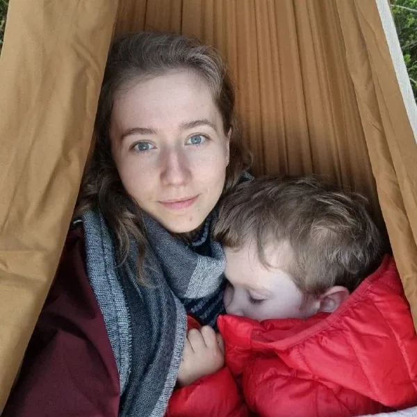
Barbara Jędrusiak
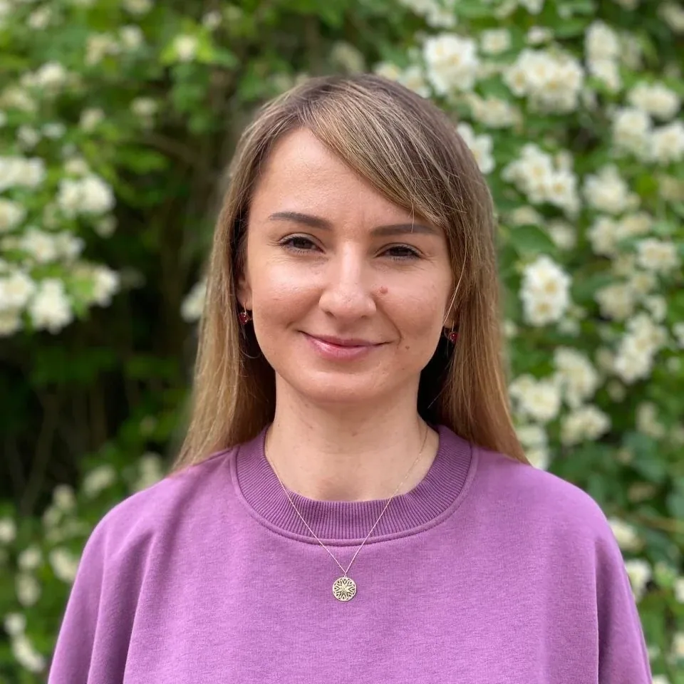
Marta Nowak
Marcin Szot
-
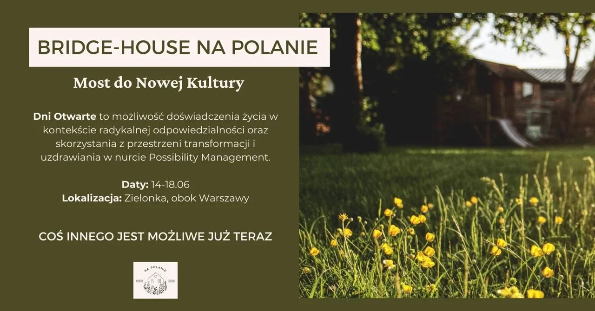
Dni otwarte
Odwiedź nas jeśli:
- chcesz doświadczyć żywego laboratorium Następnej Kultury;
- chcesz poprzez wspólne życie z nami pogłębić kontekst Archiarchii;
- ciągle czegoś poszukujesz, …i nie odnajdujesz, bo nie pozwalają na to kody kulturowe i przestrzenie w jakich przebywasz;
- przede wszystkim zapraszamy tych, którzy chcą pogłębiać więzi polskiej
Wioski Possibility Management i odkrywać z nami istotę Drużynowego
Działania. -
WIEŚCI Z POLANY
Oto zapiski z naszej wspólnej przygody w Bridge House
Jest noc. Siedzimy na ciepłym piasku wokół ogniska płonącego na brzegu stawu w sosnowym lesie. ...
Stoję naga w wodzie. Całkowicie odsłonięta. Wszyscy wokół mogą mnie zobaczyć. A ja, na swojej...
Jestem tu. Pośrodku lasu. Wychodzę po zmroku na taras małego drewnianego domku. Widzę światła w...